Some rules have two limits at once - a rollercoaster might need riders between 1.2 m and 2 m tall, not just under one height. Today you learn to read, draw and list values for these double-bounded inequalities.
By the end you’ll know…
A double inequality such as -3 < x <= 4 states two conditions at once.
It is read from the unknown outwards: x is greater than -3 and less than or equal to 4.
On a number line it is a bounded region, with the circle at each end set by its own symbol.
The integers it contains lie between the bounds, and a bound itself counts only when its symbol allows it.
By the end you can
G4Represent and interpret double inequalities on a number line.
G4List integer values satisfying a double inequality, including with negative bounds.
Work down the page at your own pace. Write every answer in your book first, then click to check it.
01
Do Now
About 5 minutes
1
Work out -6 + 9.
3.
2
Work out 4 - 7.
-3.
3
Work out -2 - (-5).
3.
Remember these?
LAST LESSONDescribe the number line for x ≥ −2.
Filled circle at −2 with the arrow pointing right.
LAST WEEKTo key in 12 over (7 + 5) as a fraction calculation, what must you add and why?
Brackets round 7 + 5 — the fraction bar groups the whole denominator.
LAST TERMHow many faces, edges and vertices does a cuboid have?
6 faces, 12 edges, 8 vertices.
LAST YEARSimplify 4a + 3b − a.
3a + 3b.
02
Learn
Read each card, then follow the worked examples one step at a time.
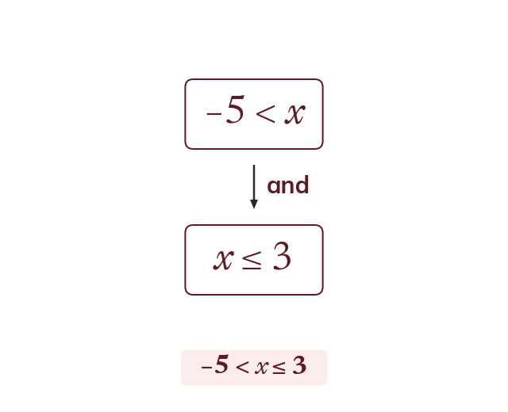
Two conditions at once
A double inequality like -5 < x ≤ 3 states two conditions at once. Read from the unknown outward: x > -5 AND x ≤ 3.
a double inequality such as -3 < x ≤ 4 states x > -3 AND x ≤ 4 at the same time. Read it from the unknown outward: x is greater than -3, and x is less than or equal to 4.
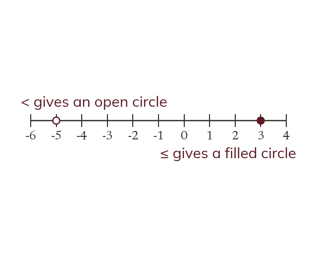
Drawing it
It is a bounded region between the two values. Each end gets its own circle, set by its own symbol. The two ends do not have to match.
on a number line this is a bounded region between the two values. Each end gets its own circle, set by its own symbol - the two ends do not have to match: < or > gives an open circle, ≤ or ≥ gives a filled circle.
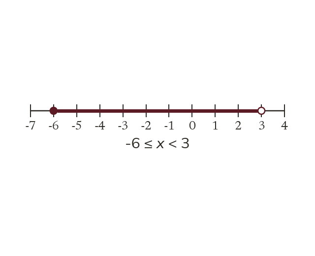
Reading it back
To read it back, note each circle and direction separately. Write the lower bound first, then the upper bound. Both apply to x in the middle.
to read a double inequality off a number line, note each circle and each direction separately, lower bound first then upper bound, both applied to x in the middle.
WORKED EXAMPLE A
Represent -3 < x ≤ 4 on a number line.
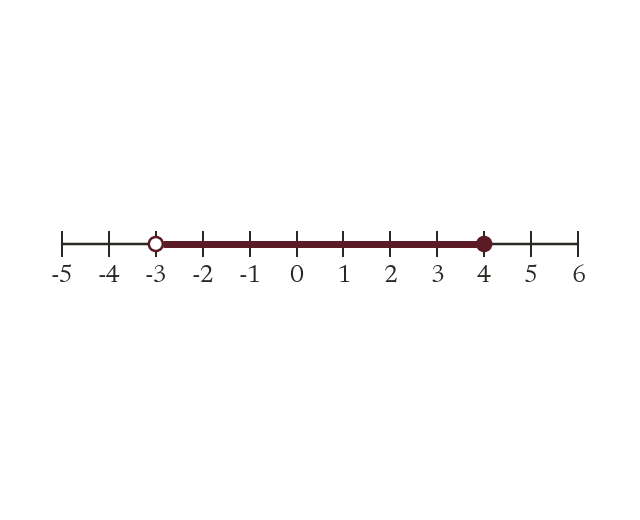
Modellower bound -3, symbol < gives an open circle (excluded).
Upper bound 4, symbol ≤ gives a filled circle (included).
Draw the line between -3 and 4.
WORKED EXAMPLE B
Represent -1 ≤ x < 5 on a number line.
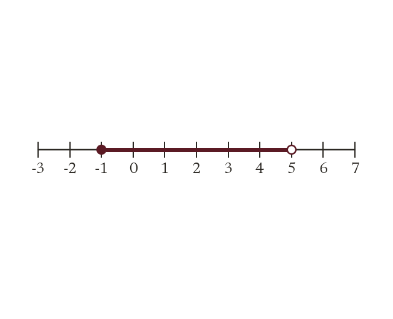
Modellower bound -1, symbol ≤ gives a filled circle (included).
Upper bound 5, symbol < gives an open circle (excluded).
Draw the line between -1 and 5.
YOUR TURN · a
Represent -2 ≤ x < 3 on a number line. (Hint: each circle takes its own symbol.)
filled circle at -2 (the ≤ includes it), open circle at 3 (the < does not), and the line joined between them
YOUR TURN · b
Represent -4 < x ≤ 2 on a number line - set each circle from its own symbol.
open circle at -4 (the < does not include it), filled circle at 2 (the ≤ does), and the line joined between them.
03
Check your understanding
Pick an answer. If it's wrong, the feedback tells you which mistake it was.
What does -2 < x ≤ 5 mean?
Yes. Both conditions hold: bigger than −2 and at most 5.
Not quite. There's a lower limit too: x > −2.
Not quite. There's an upper limit too: x ≤ 5.
Not quite. It's a range of values between −2 and 5.
Which number line correctly shows -1 ≤ x < 4?
Yes. ≤ at −1 gives a filled circle, and < at 4 gives an open one.
Not quite.x < 4 doesn't include 4, so that end is open.
Not quite.−1 ≤ x includes −1, so that end is filled.
Not quite. It's a range, so draw a line from −1 to 4.
Which double inequality does this number line show?
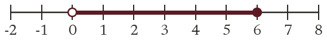
Yes. Open at 0 means 0 < x, and filled at 6 means x ≤ 6.
Not quite. The circle at 0 is open, so 0 isn't included: 0 < x.
Not quite. There's a lower limit too: 0 < x.
Not quite. There's an upper limit too: x ≤ 6.
04
Practise
mark as you go
Checkpoint. Given a number line with a filled circle at -4 and an open circle at 2, line drawn between, write the double inequality shown. Show your working - I'll check it before you move on.Show your teacher before you go on
1
Show -2 < x ≤ 3 on a number line.
Open circle at -2, filled circle at 3
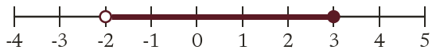
2
Show 0 ≤ x < 5 on a number line.
Filled circle at 0, open circle at 5
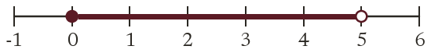
3
Write the double inequality shown.
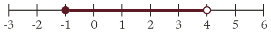
Filled at -1, open at 4 -1 ≤ x < 4
4
Write "x is more than -4 and at most 1" as a double inequality.
-4 < x ≤ 1
5
Mia shows 1 < x ≤ 6 with a filled circle at 1. What is her mistake?
< is strict: 1 is not included The circle at 1 should be open
EXT
Write "x ≥ 3 and x < 8" as a single double inequality.
3 ≤ x < 8
05
Learn
Read each card, then follow the worked examples one step at a time.
Which integers count
Only whole numbers count. Check each end separately. A bound counts only if its own symbol allows it.
only whole numbers count, and each end is checked separately - a bound counts only if its own symbol allows it (≤, ≥ include the boundary; <, > exclude it).
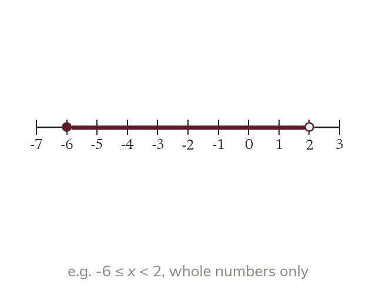
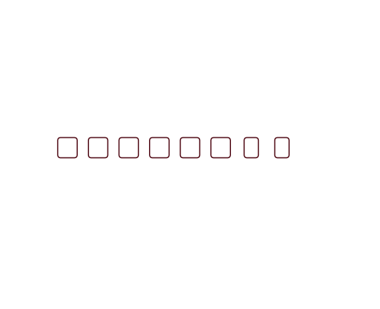
Negative bounds
With a negative lower bound, start counting from that negative integer, not 0. Count up through zero, stopping at the upper bound.
when the lower bound is negative, start counting from that negative integer, not from 0. Count up through the negative integers, then zero, then positive integers, stopping at the upper bound.
WORKED EXAMPLE C
List the integers satisfying -3 < x ≤ 4. Model: lower bound -3 is excluded (open), so start at -2
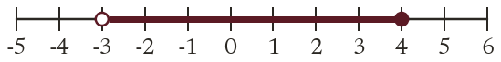
upper bound 4 is included (filled). List-2, -1, 0, 1, 2, 3, 4.
WORKED EXAMPLE D
List the integers satisfying -5 ≤ x < 1. Model: lower bound -5 is included (filled), so start at -5
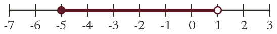
upper bound 1 is excluded (open), so stop at 0. List: -5, -4, -3, -2, -1, 0.
YOUR TURN · c
List the integers satisfying -1 < x ≤ 3.
0, 1, 2, 3 - the < excludes -1, so the list starts at 0
YOUR TURN · d
List the integers satisfying -2 ≤ x < 3.
-2, -1, 0, 1, 2.
06
Check your understanding
Pick an answer. If it's wrong, the feedback tells you which mistake it was.
List the integers satisfying -3 ≤ x < 2.
Yes.−3 is included and 2 isn't: −3, −2, −1, 0, 1.
Not quite. Start at −3, not 0: the negatives count too.
Not quite.x < 2 leaves 2 out.
Not quite. It's a range, so list every integer from −3 up to 1.
List the integers satisfying -4 < x ≤ 1.
Yes.−4 is left out and 1 is in: −3, −2, −1, 0, 1.
Not quite. Start just above −4: the negatives count too.
Not quite.−4 < x leaves −4 out.
Not quite. It's a range, and −4 isn't included. List −3 up to 1.
A student is asked to list the integers satisfying -2 ≤ x < 3, but only checks x < 3 and lists every integer below 3. What key step have they missed?
Yes. There are two conditions: check x ≥ −2 as well.
Not quite. They missed the lower limit, x ≥ −2.
Not quite. Start at −2, the lower limit, not at 0.
Not quite. It's a range, so a list is right. Check the lower limit too.
07
Practise
mark as you go
Checkpoint. List the integer values satisfying -4 ≤ x < 1. Show your working - I'll check it before you move on.Show your teacher before you go on
1
List the integers that satisfy -2 < x ≤ 2
-2 is not included; 2 is -1, 0, 1, 2
2
List the integers that satisfy -5 ≤ x < -1
-5 is included; -1 is not -5, -4, -3, -2
3
List the integers that satisfy 1.5 < x < 5.5
2, 3, 4, 5
4
List the integers that satisfy -3 ≤ x ≤ 0
Both ends are included -3, -2, -1, 0
5
How many integers satisfy -10 < x < 10?
-9 to 9: 9 negative, 9 positive and 0 19 integers
EXT
The inequality -1 < x ≤ n has exactly 5 integer solutions, and n is an integer. Find n.
The solutions start at 0: 0, 1, 2, 3, 4 n = 4
08
Exit ticket
On paper, on your own, then check
1
What two separate conditions does the double inequality -3 < x ≤ 4 state about x? Read from x outward.
x is greater than -3 (strictly, -3 itself excluded), and x is less than or equal to 4 (4 itself included).
2
Draw a number line to show -2 ≤ x < 3.
A filled circle at -2 (included), an open circle at 3 (excluded), with the line drawn between them.
3
List the integer values that satisfy -5 < x ≤ 0.
x = -4, -3, -2, -1, 0.
Finished? Next lesson: 8.2.3 Solving Inequalities.
Practise more
After the lesson, or whenever you want more
Dr Frost
Log in, then search for a code to practise that skill.
309cRepresent a two-ended inequality on a number line.
309dInterpret a two-ended inequality represented on a number line.
309fList the integer values represented by an algebraic statement of inequality.